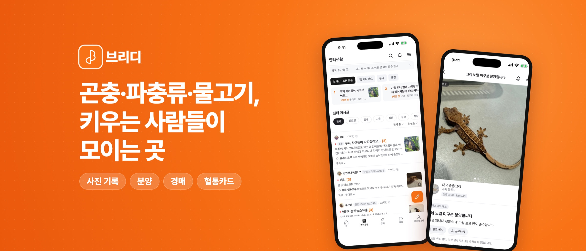
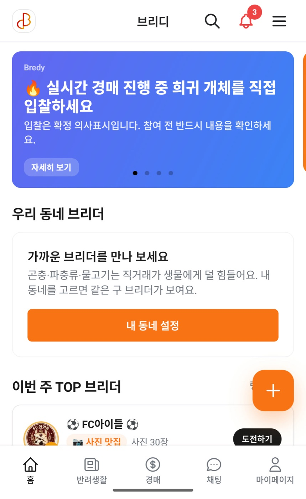
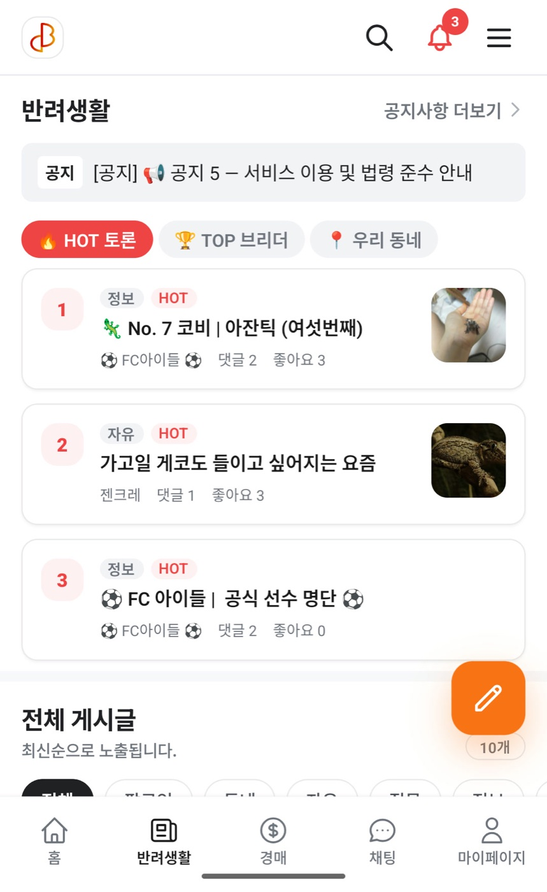
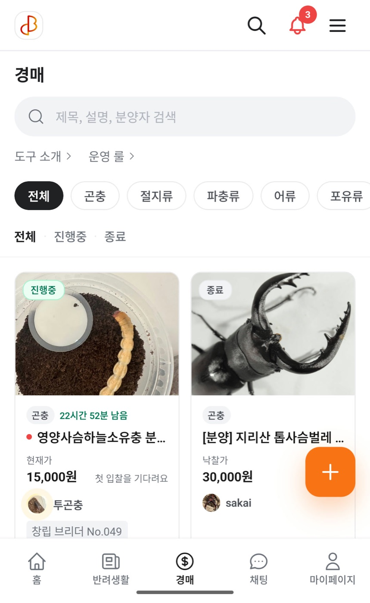
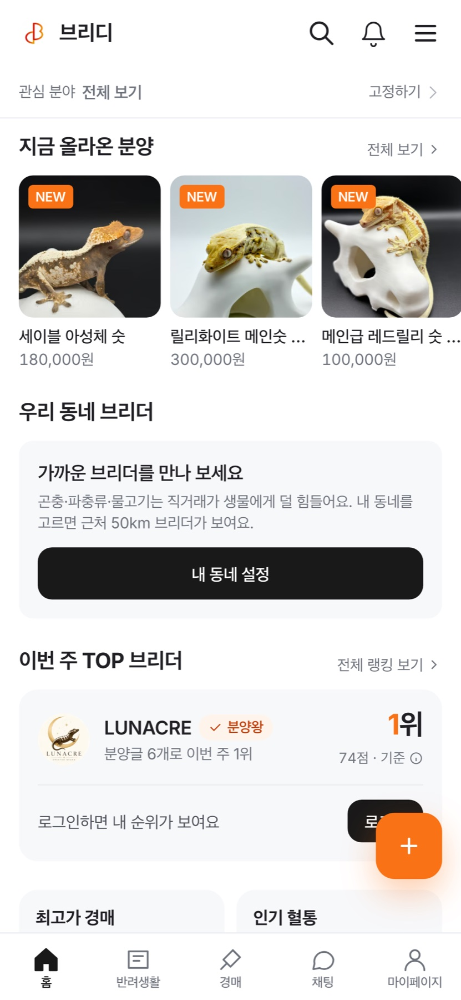
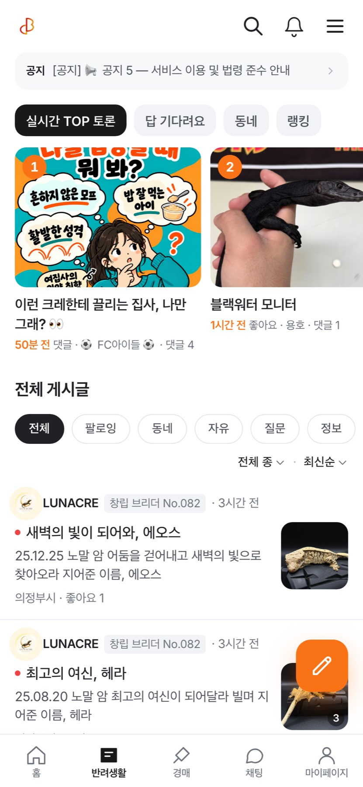
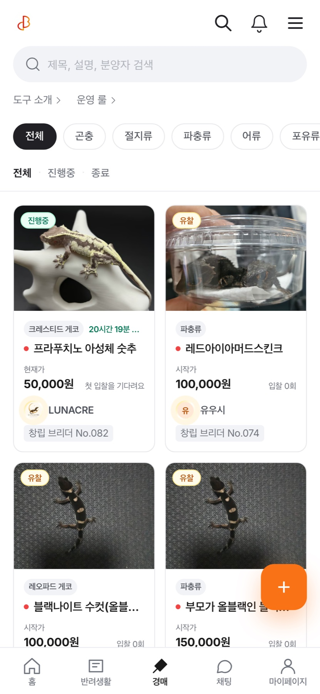

프론트엔드 개발자입니다. 회사에서는 AI 법률 에이전트와 전자서명 · 계약서 검토 · 작성 · 리뷰 · 이행관리를 하는 계약 관리 SaaS 앨리비의 프론트엔드를 만들고, 개인으로는 생물 커뮤니티 플랫폼 브리디를 기획부터 웹 · 앱 · 마케팅까지 혼자 만들어 운영합니다.
화면만 만들고 끝내지 않습니다. 배포 · 측정 · 운영 규칙까지 코드로 만들어 두고, 그 위에서 빠르게 내보냅니다. 브리디 웹은 릴리스 버전을 매기기 시작한 뒤 9일 동안 29번 운영에 배포했습니다.
AI 법률 에이전트, 전자서명 · 계약서 검토 · 작성 · 리뷰 · 이행관리 SaaS의 프론트엔드를 만듭니다. AI 계약 앱 Cue FE 리드, 삼성SDS 법무시스템 개발.
브리디를 기획부터 Next.js 웹, Expo 앱, 스토어 제출까지 혼자 만듭니다. 한쪽만 바뀌면 커밋을 막는 훅으로 웹과 앱을 맞춥니다.
Claude Code 스킬을 직접 만들어 쓰고, 에이전트가 지켜야 할 규칙은 문서가 아니라 훅과 CI로 강제합니다. 이 방식을 회사 팀에도 도입했습니다.
| Frontend | React, Next.js(App Router), SvelteKit, TypeScript, Tailwind CSS, react-query, SWR, Recoil |
| Backend | Next.js API Routes, Prisma, PostgreSQL(Supabase), iron-session · JWT, Vercel Serverless |
| Mobile | React Native(Expo SDK 56), Expo Router, NativeWind, EAS Build, FCM, Google Play Developer API |
| 품질 · 운영 | Jest, Vitest, Playwright E2E, GitHub Actions, Sentry, PostHog, Cloudflare Images |
| AI 워크플로우 | Claude Code, Codex, 스킬 · 훅 · 서브에이전트 설계, 토큰 사용량 측정 · 절감 도구 |

생물을 키우는 사람들이 사진으로 기록하고, 분양하고, 경매하고, 혈통을 관리하는 커뮤니티입니다. v1(Firebase) → v2 → v3(Next.js + Prisma)로 세 번 다시 만들었고, 2026년 6월부터 같은 백엔드를 쓰는 Expo 앱을 함께 만들고 있습니다.
앱과 웹은 같은 시안 · 같은 PRD에서 나옵니다. 기기 기능(푸시 · 광고 · 햅틱)과 웹 전용(SEO · 관리자)만 빼고 항상 같이 바꿉니다.






웹을 앱 디자인에 맞춘 뒤에도 앱 전용 기능이 쌓이면서 다시 벌어졌습니다. 점검해 보니 앱 화면 56개 중 44개만 웹에 있었습니다.
Parity: both | app-only | web-only 트레일러가 없으면 훅이 막고, 한쪽만 고치고 끝난 작업은 되돌려 보냅니다(훅 테스트 42건).parity:audit 스크립트로 웹 · 앱 화면 경로를 대조해 빠진 화면을 찾습니다.코딩 에이전트가 Prisma migrate diff의 임시(shadow) DB 자리에 공유 dev DB 주소를 넣어 dev DB 데이터가 모두 지워졌습니다(운영 영향 없음). 백업도 없었습니다.
DROP · 실제 DB를 shadow로 쓰는 명령은 거부합니다(테스트 케이스 80여 건).사진은 위쪽 썸네일 줄, 글은 아래라서 사진과 설명이 번갈아 나오는 사육기 · 세팅기를 쓸 수 없었습니다. 앱(RN)과 웹에서 똑같이 동작해야 했습니다.
[[photo:N]] · ## · **굵게**만 넣는 형식을 정해 DB 변경 없이 저장합니다. 사용자가 친 같은 글자는 이스케이프합니다.유찰되거나 낙찰자가 연락 없이 사라지면 같은 개체를 처음부터 새로 등록하는 수밖에 없었습니다.
round + 1)로 다시 엽니다. 지난 회차 입찰은 archivedAt으로 보관합니다.UPDATE backfill을 막아서, 기본값만으로 동작하게 설계했습니다.알림 화면에 들어가자마자 전체를 읽음으로 바꾸는 요청이 나가, 새 알림 표시가 확인하기도 전에 사라졌습니다. 목록도 글자만 있어 무엇에 대한 알림인지 알기 어려웠습니다.
Play 콘솔에서 코드 최적화 미달 경고를 받았고(R8 꺼짐), PostHog 지표는 페이지뷰 누락 · 사용자 식별 0건 · 오류 이벤트 소음 때문에 믿기 어려웠습니다.
identify 누락, 비로그인 401 소음, 섹션 노출이 로드 때 한꺼번에 찍히던 문제.